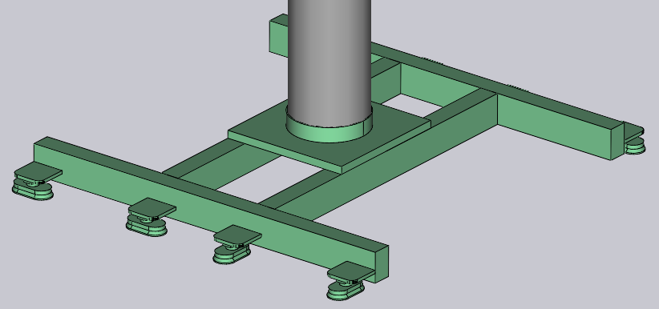

Importa gripper da DXF
Un gripper a ventosa per le macchine BendMaster può essere importato da un file DXF. Il file DXF rappresenta la vista dall’alto del gripper (vista dall’alto significa dalle ventose, NON dal BendMaster). Le entità POLYLINE nel file DXF forniscono la forma della piastra del gripper e le entità TEXT forniscono informazioni aggiuntive sul gripper (come il nome, lo spessore e il posizionamento delle ventose).
I file nel formato richiesto (DXF, ARV o GEO) possono essere importati nel database di piegatura.
Per importare un gripper:
-
Aprire il Database all’interno di TecZone Bend.
-
Selezionare l’opzione Bend Grippers dall’elenco.
-
Fare clic sull’opzione Import… e selezionare un gripper come file DXF dalla directory.

Ecco come appare questo gripper dopo l’importazione (mostrato in due viste dal basso e dall’alto).


Gripper base
Vedere il semplice disegno mostrato di seguito, che definisce un gripper e può essere salvato come file DXF da reimportare all’interno dell'Inventario gripper.

Ecco alcuni punti importanti su come viene disegnato il DXF:
-
L’origine del disegno (0,0) corrisponde al centro del polso del robot. È possibile vedere questo rappresentato da un punto e un cerchio nella figura. (Sia il punto che il cerchio non sono realmente necessari per l’importazione del gripper, poiché il centro del gripper è implicitamente sempre all’origine).
-
Questo disegno ha anche alcune entità POINT che rappresentano ciascuna delle posizioni delle ventose. Anche queste sono principalmente per rendere il disegno più chiaro e non sono effettivamente utilizzate dall’importatore di gripper (le posizioni delle ventose sono specificate da entità di testo).
-
La forma effettiva della piastra è disegnata come entità POLYLINE chiuse. Se ci sono altre polilinee all’interno di quella esterna, diventano fori nella piastra.


Gripper a due strati
Gripper leggermente più complessi possono essere modellati utilizzando un layer BASEPLATE separato. Creare un layer denominato BASEPLATE nel file DXF e disegnare alcune forme POLYLINE chiuse in quel layer. Quindi questo layer può avere limiti di estrusione Z separati specificati dalla chiave BASEPLATEEXTENT. Gli strumenti necessari per creare e modificare i layer sono ora aggiunti.
-
Fare clic su Related quando viene modificato un disegno.
-
Selezionare il menu Layers per aggiungere nuovi layer, rinominarli, impostare i colori e modificare gli stili di linea.

-
Nel disegno, facendo clic su un’entità è possibile modificare il layer di quell’entità.

Il layer appare nel pannello dell’entità solo se sono presenti più layer nel disegno. -
Dopo aver modificato il disegno utilizzando questi strumenti, salvare il disegno in formato DXF. Ecco un DXF disegnato utilizzando tale layer BASEPLATE (mostrato in verde nell’immagine).

Per questo gripper, il polso si estende da Z=0 a Z=23. Quindi, la piastra base (verde) si estende da Z=23 a Z=40, come indicato dalla chiave BASEPLATEEXTENT. Infine, l’effettiva piastra del gripper (che tiene le ventose) si estende da Z=40 a Z=63, come indicato dalla chiave PLATEEXTENT. La piastra del gripper ha anche alcuni fori esagonali. Quando importato, questo gripper appare come nell’immagine seguente:

Gripper multistrato
I Gripper multistrato sono una versione aggiornata del Gripper a due strati in cui più di due strati possono essere creati e importati utilizzando TecZone Bend. Per utilizzare un gripper multistrato, il DXF dovrà includere il testo VERSION = 2. Un esempio di gripper multistrato è mostrato di seguito:

Ogni layer deve essere definito con le sue estensioni come LAYER_1 = 23 : 35. Le entità in questo layer verranno aggiunte a queste estensioni. Allo stesso modo, le ventose sono definite nella forma, CupNo = X pos, Y pos, [Cup type, Mounting height, Cup group].
| Le posizioni X e Y sono obbligatorie. |
Le diverse possibili definizioni per le ventose sono spiegate di seguito:
CupNo = X pos, Y pos con il nome della ventosa specificato in CUPNAME come nella versione precedente
CupNo = X pos, Y pos, Cup type, in cui ogni tipo di ventosa è definito separatamente (per le
ventose ovali, i nomi variano con l’angolo)
CupNo = X pos, Y pos, Cup type, Mounting Height
CupNo = X pos, Y pos, Cup type, Mounting Height, Cup Group
CUP1 = 275, 314, SAOB60x30_90grad_ged, 72, 2
Se l’altezza di montaggio non è specificata, viene considerata l’estensione massima della piastra per impostazione predefinita. Allo stesso modo, il gruppo di ventose sarà impostato su 1, se non definito.
| Al momento, TecZone Bend non supporta diverse altezze di montaggio per le ventose. |
Quando importato, un gripper di esempio appare come nell’immagine seguente:


Gripper multicircuito
È possibile creare un gripper multicircuito (un gripper che ha diversi circuiti di vuoto indipendenti). Per un tale gripper, a ogni ventosa viene assegnato un numero di gruppo diverso da zero.
Assegnare gruppi di aspirazione utilizzando un formato speciale per CUP1POS, CUP2POS, ecc. come mostrato di seguito:
CUP1POS = 340,120 #6
CUP2POS = 420,140 #8
Il valore dopo il # è il numero del gruppo di aspirazione per la ventosa. In questo esempio, la Ventosa 1 è assegnata al gruppo di aspirazione 6, la Ventosa 2 è assegnata al gruppo di aspirazione 8 e così via.
Affinché un gripper multicircuito sia configurato correttamente, ogni ventosa deve essere assegnata un numero di gruppo di aspirazione in questo modo.
| Il numero massimo di ventose che possono essere utilizzate in un gripper è limitato a 100. Se si importa un gripper con più di 100 ventose, TecZone mostrerà un messaggio di errore di importazione non riuscita. |
L’immagine seguente mostra alcuni gripper di esempio all’interno del database Bend Grippers.